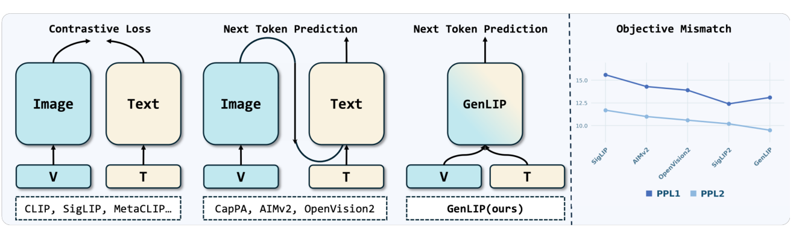
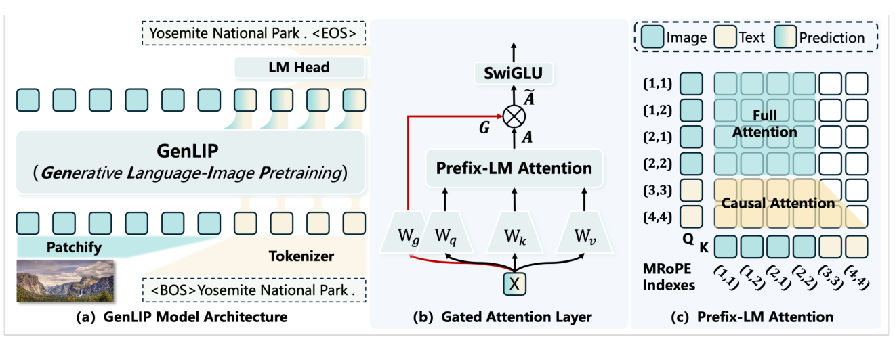
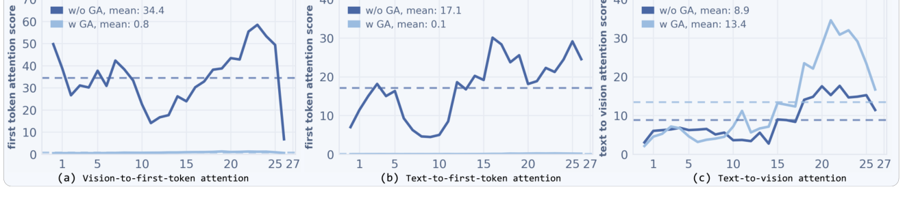

五分钟重建
图像检索预训练与下游语言生成的目标不同。GenLIP 让同一个 Transformer 在预训练时看图、生成描述，用语言损失训练视觉表示。
拼接图像与文本
图像 token 在前，文本 token 在后。图像之间双向可见；文本看全部图像和已有文本，不能看未来文本。
预测下一个词
损失只算在文本位置。可学习门控乘在 attention 输出上，论文观察到它减轻了首 token 的 attention sink。
取出视觉编码器
下游只输入图像，丢弃语言头与分词器。视觉输出经 connector 接到下游 LLM。
具体例子（教学假设）：输入两块图像 token 和描述“猫 在 睡觉”。预测“睡觉”时可看全部图像与“猫 在”；图像 token 看不到训练描述。否则下游只输入图像时，视觉特征会缺少训练时偷看的信息。
边界：独立解码器路线同样能把梯度传回 ViT。GenLIP 的区别是共享单个 Transformer。池化不保证各 token 梯度均匀，门控也不是自动识别坏 token 的硬开关。
换个条件看机制
训练结束后删掉 LM head，图像 token 还能互相看吗？为什么不需要生成描述才能得到视觉特征？
还能。只剩图像前缀时，图像之间本来就是双向注意力。语言损失已在训练时更新了共享权重，推理时可直接读视觉表示。
2026-10-04：讲解与练习待试用，本次未进行理解检验；此处不记录复测通过。
论文图解



一页看懂
02问题
给 MLLM 训视觉编码器的三条旧路各有死穴：对比学习（CLIP/SigLIP）学判别式特征，与生成式下游目标错位；编-解码生成式（AIMv2）ViT 的梯度经独立解码器传回；多目标混合（SigLIP2）要 40B 样本才出效果。
方法
看图写话考试：让学生自己看、自己写、自己被打分。单塔 Prefix-LM 直接用 next token prediction 训 ViT 本体，不挂解码器绕弯子。
结果
仅用 8B 样本（SigLIP2 的 1/5）全规模全面超越；ALL AVG 73.6 vs 68.9。代价：依赖高质量描述数据，丢掉零样本检索的天然优势。
GenLIP 让同一个 Transformer 看图并生成描述，用下一词预测训练视觉表示，之后取出它作为视觉编码器。
关键机制：Prefix-LM Attention 一塔两用
03序列 = 图像 token × M 拼在前面当「前缀」，文本 token × L 排后面。一个 Transformer 同时干编码器（图像段，双向）和解码器（文本段，因果）的活，ViT 本体直接收到语言建模的梯度。
损失只在文本部分算（next token prediction），图像 token 不计损。位置编码用 MRoPE 处理拼接序列的相对位置。
| 注意力方向 | 模式 | 为什么 |
|---|---|---|
| 图像 → 图像 | 双向全注意力 | 编码器模式，形成好的视觉表示 |
| 文本 → 文本 | 因果 | 标准自回归生成 |
| 文本 → 图像 | 可见 | 生成时检索视觉信息 |
| 图像 → 文本 | 不可见 | 图像在前，因果约束下看不到后面的文本 |
推理当视觉编码器用时：丢掉文本分词器和语言头，只输入图像，Prefix-LM 退化为标准全注意力，取最后 LN 层输出过 2 层 MLP 投影给 LLM。两阶段训练：224² 固定分辨率 1B 图文对打底，再 37M 高质量长描述做原生宽高比适配（视觉 token 约束在 16~1024）。
关键机制：Gated Attention 防 attention sink
04attention sink：生成式预训练中模型发现捷径，把信息往少数几个视觉 token 上汇聚，靠这几个枢纽就能预测文本，其余视觉 token 表征退化。
论文 §3.2 与附录 D 的解释：图像前缀可聚合全局信息，后续文本可反复读取它，模型可能把生成所需的信息集中在少数视觉 token。池化不保证均匀梯度，对比学习也不保证没有 sink。
给注意力输出加可学习门，动态调节每个位置的信息流量；比加 register token 或 [CLS] token 更简洁。
关键数字
05| 维度 | 结果 | 附注 |
|---|---|---|
| 范式消融 | 同 2B 数据全类别领先 | vs 对比式 SigLIP、编-解码式 OpenVision2，支持该数据与模型设置下单塔生成式训练的优势 |
| 可扩展性 | L→So→g 稳步提升 | SigLIP2 的 So→g 几乎无收益 |
| 代价 | 依赖高质量描述数据 | 生成式方法固有依赖 |
| 局限 | 无零样本检索天然优势 | 没有显式对比目标；更大规模前沿模型的泛化性待验 |
卡壳点
06Q：为什么生成式预训练更容易触发 attention sink（对比学习反而不容易）？（Q3 漏掉的半问）
本文的关键是共享图像前缀的注意力结构。图像 token 可以聚合全局信息，后续文本可以反复读取前缀，模型便可能走「少数 token 承载全局信息」的捷径。原文 §3.2、附录 D 和 Figure 3 支持这个解释。对比学习并不保证各 token 梯度均匀，也不是 sink 的免疫机制。门控是学习到的信息流调节；消融显示它缓解了本模型的 sink，不能把它说成识别坏 token 后逐个压制的硬规则。
2026-10-04：按原文修正此前「池化逼所有 token 均匀贡献」与「门自动识别 sink」的过强解释，历史复述原话保留。
「独立文本解码器」指什么？（2026-08-24 复测暴露的混淆点）
指的是预训练时的组件（AIMv2 式编-解码路线），不是下游 MLLM 的「ViT + MLP connector + LLM」推理接法。后者是 GenLIP 自己推理时也在用的标准接法（2 层 MLP 投影给 LLM），两者别搞混。
关联与来源
07RELATED
SOURCE
7MFX8GUA / LW7H5ZBM